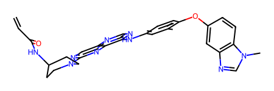

# df['covalent'] = df.SMILES.apply(contain_acrylamide)RDKit ligand
Setup
contain_acrylamide
def contain_acrylamide(
smiles, ACRYLAMIDE_SMARTS:str='C=CC(=O)N', # SMARTS pattern for acrylamide
):
Check if the SMILES contain acrylamide (can form covalent bond with cysteine in protein)
plot_drug
def plot_drug(
drug_dict, flip_list:NoneType=None, save_path:NoneType=None
):
Call self as a function.
drug_smiles = {
"Capmatinib": "CNC(=O)C1=C(C=C(C=C1)C2=NN3C(=CN=C3N=C2)CC4=CC5=C(C=C4)N=CC=C5)F",
"Tepotinib": "CN1CCC(CC1)COC2=CN=C(N=C2)C3=CC=CC(=C3)CN4C(=O)C=CC(=N4)C5=CC=CC(=C5)C#N",}
flip_list = ['Tepotinib'] # indicate keys to flip horizontally
plot_drug(drug_smiles,
flip_list=flip_list,
# save_path='drug_structures.svg'
)Conformer
rdkit_conformer
def rdkit_conformer(
SMILES, # SMILES string
output:NoneType=None, # file ".sdf" to be saved
method:str='ETKDG', # Optimization method, can be 'UFF', 'MMFF' or 'ETKDGv3'
visualize:bool=True, # whether or not to visualize the compound
seed:int=3, # randomness of the 3D conformation
):
Gemerate 3D conformers from SMILES
rdkit_conformer('CC1=C(C=CC(=C1)NC2=NC=NC3=CN=C(N=C32)N4CCC(CC4)NC(=O)C=C)OC5=CC6=C(C=C5)N(C=N6)C')
tanimoto
def tanimoto(
df, # df with SMILES and ID columns
smiles_col:str='SMILES', # colname of SMILES
id_col:str='ID', # colname of compound ID
target_col:NoneType=None, # colname of compound values (e.g., IC50)
radius:int=2, # radius of the Morgan fingerprint.
):
Calculates the Tanimoto similarity scores between all pairs of molecules in a pandas DataFrame.
df = Kras.get_mirati_g12d_raw()[['ID','SMILES','IC50']]
df = df.dropna(subset= 'IC50').reset_index(drop=True)
df| ID | SMILES | IC50 | |
|---|---|---|---|
| 0 | US_1 | CN1CCC[C@H]1COc1nc(N2CC3CCC(C2)N3)c2cnc(cc2n1)... | 124.7 |
| 1 | US_2 | CN1CCC[C@H]1COc1nc(N2CC3CCC(C2)N3)c2cnc(c(F)c2... | 2.7 |
| ... | ... | ... | ... |
| 703 | paper_37 | FC1=C(C2=C(C(Cl)=CC=C3)C3=CC(O)=C2)N=CC4=C1N=C... | 2.0 |
| 704 | paper_38 | FC1=C(C2=C(C(C#C)=CC=C3)C3=CC(O)=C2)N=CC4=C1N=... | 2.0 |
705 rows × 3 columns
result = tanimoto(df.head(), target_col = 'IC50')
result| ID1 | ID2 | SMILES1 | SMILES2 | SimilarityScore | Target1 | Target2 | |
|---|---|---|---|---|---|---|---|
| 0 | US_3 | US_4 | Cn1ccnc1CCOc1nc(N2CC3CCC(C2)N3)c2cnc(c(F)c2n1)... | Oc1cc(-c2ncc3c(nc(OCCc4ccccn4)nc3c2F)N2CC3CCC(... | 0.779221 | 9.5 | 496.2 |
| 1 | US_1 | US_2 | CN1CCC[C@H]1COc1nc(N2CC3CCC(C2)N3)c2cnc(cc2n1)... | CN1CCC[C@H]1COc1nc(N2CC3CCC(C2)N3)c2cnc(c(F)c2... | 0.743590 | 124.7 | 2.7 |
| ... | ... | ... | ... | ... | ... | ... | ... |
| 8 | US_1 | US_3 | CN1CCC[C@H]1COc1nc(N2CC3CCC(C2)N3)c2cnc(cc2n1)... | Cn1ccnc1CCOc1nc(N2CC3CCC(C2)N3)c2cnc(c(F)c2n1)... | 0.505495 | 124.7 | 9.5 |
| 9 | US_1 | US_4 | CN1CCC[C@H]1COc1nc(N2CC3CCC(C2)N3)c2cnc(cc2n1)... | Oc1cc(-c2ncc3c(nc(OCCc4ccccn4)nc3c2F)N2CC3CCC(... | 0.488889 | 124.7 | 496.2 |
10 rows × 7 columns
Rdkit feature
get_rdkit
def get_rdkit(
SMILES:str
):
Extract chemical features from SMILES Reference: https://greglandrum.github.io/rdkit-blog/posts/2022-12-23-descriptor-tutorial.html
get_rdkit_3d
def get_rdkit_3d(
SMILES:str
):
Extract 3d features from SMILES
get_rdkit_all
def get_rdkit_all(
SMILES:str
):
Extract chemical features and 3d features from SMILES
remove_hi_corr
def remove_hi_corr(
df:DataFrame, thr:float=0.99, # threshold
):
Remove highly correlated features in a dataframe given a pearson threshold
preprocess
def preprocess(
df:DataFrame, thr:float=0.99
):
Remove features with no variance, and highly correlated features based on threshold.
get_rdkit_df
def get_rdkit_df(
df:DataFrame, include_3d:bool=False, col:str='SMILES', postprocess:bool=False,
chunksize:int=128, # for parallel process_map
):
Extract rdkit features (optionally in parallel with 3D) from SMILES in a df
df=Collins.get_antibiotics_2k().head(300)
df.head()| name | SMILES | inhibition | activity | |
|---|---|---|---|---|
| 0 | CEFPIRAMIDE | Cc1cc(O)c(C(=O)NC(C(=O)NC2C(=O)N3C(C(=O)O)=C(C... | 0.041572 | 1 |
| 1 | GEMIFLOXACIN MESYLATE | CON=C1CN(c2nc3c(cc2F)c(=O)c(C(=O)O)cn3C2CC2)CC... | 0.041876 | 1 |
| 2 | POLYMYXIN B SULFATE | CCC(C)CCCCC(=O)NC(CCN)C(=O)NC(C(=O)NC(CCN)C(=O... | 0.041916 | 1 |
| 3 | PRAXADINE HYDROCHLORIDE | Cl.N=C(N)n1cccn1 | 0.041964 | 1 |
| 4 | CHLORHEXIDINE DIHYDROCHLORIDE | Cl.Cl.N=C(NCCCCCCNC(=N)NC(=N)Nc1ccc(Cl)cc1)NC(... | 0.042295 | 1 |
# %%time
# feat_raw=get_rdkit_df(df)
# feat_rawCPU times: user 46.6 ms, sys: 65.7 ms, total: 112 ms
Wall time: 2.63 s| MaxAbsEStateIndex | MaxEStateIndex | MinAbsEStateIndex | MinEStateIndex | qed | SPS | MolWt | HeavyAtomMolWt | ExactMolWt | NumValenceElectrons | NumRadicalElectrons | MaxPartialCharge | MinPartialCharge | MaxAbsPartialCharge | MinAbsPartialCharge | FpDensityMorgan1 | FpDensityMorgan2 | FpDensityMorgan3 | BCUT2D_MWHI | BCUT2D_MWLOW | BCUT2D_CHGHI | BCUT2D_CHGLO | BCUT2D_LOGPHI | BCUT2D_LOGPLOW | BCUT2D_MRHI | BCUT2D_MRLOW | AvgIpc | BalabanJ | BertzCT | Chi0 | Chi0n | Chi0v | Chi1 | Chi1n | Chi1v | Chi2n | Chi2v | Chi3n | Chi3v | Chi4n | Chi4v | HallKierAlpha | Ipc | Kappa1 | Kappa2 | Kappa3 | LabuteASA | PEOE_VSA1 | PEOE_VSA10 | PEOE_VSA11 | ... | fr_benzodiazepine | fr_bicyclic | fr_diazo | fr_dihydropyridine | fr_epoxide | fr_ester | fr_ether | fr_furan | fr_guanido | fr_halogen | fr_hdrzine | fr_hdrzone | fr_imidazole | fr_imide | fr_isocyan | fr_isothiocyan | fr_ketone | fr_ketone_Topliss | fr_lactam | fr_lactone | fr_methoxy | fr_morpholine | fr_nitrile | fr_nitro | fr_nitro_arom | fr_nitro_arom_nonortho | fr_nitroso | fr_oxazole | fr_oxime | fr_para_hydroxylation | fr_phenol | fr_phenol_noOrthoHbond | fr_phos_acid | fr_phos_ester | fr_piperdine | fr_piperzine | fr_priamide | fr_prisulfonamd | fr_pyridine | fr_quatN | fr_sulfide | fr_sulfonamd | fr_sulfone | fr_term_acetylene | fr_tetrazole | fr_thiazole | fr_thiocyan | fr_thiophene | fr_unbrch_alkane | fr_urea | |
|---|---|---|---|---|---|---|---|---|---|---|---|---|---|---|---|---|---|---|---|---|---|---|---|---|---|---|---|---|---|---|---|---|---|---|---|---|---|---|---|---|---|---|---|---|---|---|---|---|---|---|---|---|---|---|---|---|---|---|---|---|---|---|---|---|---|---|---|---|---|---|---|---|---|---|---|---|---|---|---|---|---|---|---|---|---|---|---|---|---|---|---|---|---|---|---|---|---|---|---|---|---|
| 0 | 13.503995 | 13.503995 | 0.064423 | -1.323430 | 0.162954 | 18.619048 | 612.650 | 588.458 | 612.120937 | 218 | 0 | 0.352159 | -0.507967 | 0.507967 | 0.352159 | 1.214286 | 1.952381 | 2.595238 | 32.167943 | 10.004034 | 2.541608 | -2.492828 | 2.413335 | -2.707792 | 8.005500 | -0.150504 | 3.369454 | 1.339505e+00 | 1610.181663 | 30.128663 | 22.084778 | 23.717771 | 20.044622 | 12.357347 | 14.391701 | 9.367961 | 11.415452 | 6.531851 | 8.968356 | 4.422333 | 6.757255 | -4.64 | 2.012862e+09 | 28.873109 | 11.690583 | 5.597490 | 245.926226 | 25.953159 | 34.653617 | 0.000000 | ... | 0 | 1 | 0 | 0 | 0 | 0 | 0 | 0 | 0 | 0 | 0 | 0 | 0 | 0 | 0 | 0 | 0 | 0 | 1 | 0 | 0 | 0 | 0 | 0 | 0 | 0 | 0 | 0 | 0 | 0 | 1 | 1 | 0 | 0 | 0 | 0 | 0 | 0 | 1 | 0 | 2 | 0 | 0 | 0 | 1 | 0 | 0 | 0 | 0 | 0 |
| 1 | 14.874521 | 14.874521 | 0.033885 | -3.666667 | 0.398220 | 19.484848 | 485.494 | 461.302 | 485.138047 | 180 | 0 | 0.340725 | -0.477497 | 0.477497 | 0.340725 | 1.424242 | 2.060606 | 2.575758 | 32.239615 | 10.092419 | 2.328029 | -2.190189 | 2.370431 | -2.256089 | 7.845502 | 0.069447 | 3.471950 | 5.549999e-07 | 1265.508949 | 24.499271 | 17.933021 | 18.749518 | 15.439091 | 9.902198 | 11.750510 | 7.791830 | 9.257870 | 5.167537 | 5.167537 | 3.595955 | 3.595955 | -3.10 | 1.783676e+07 | 24.540619 | 9.407810 | 5.638555 | 187.744947 | 25.144793 | 18.320426 | 11.635084 | ... | 0 | 1 | 0 | 0 | 0 | 0 | 0 | 0 | 0 | 1 | 0 | 0 | 0 | 0 | 0 | 0 | 0 | 0 | 0 | 0 | 0 | 0 | 0 | 0 | 0 | 0 | 0 | 0 | 1 | 0 | 0 | 0 | 0 | 0 | 0 | 0 | 0 | 0 | 2 | 0 | 0 | 0 | 0 | 0 | 0 | 0 | 0 | 0 | 0 | 0 |
| ... | ... | ... | ... | ... | ... | ... | ... | ... | ... | ... | ... | ... | ... | ... | ... | ... | ... | ... | ... | ... | ... | ... | ... | ... | ... | ... | ... | ... | ... | ... | ... | ... | ... | ... | ... | ... | ... | ... | ... | ... | ... | ... | ... | ... | ... | ... | ... | ... | ... | ... | ... | ... | ... | ... | ... | ... | ... | ... | ... | ... | ... | ... | ... | ... | ... | ... | ... | ... | ... | ... | ... | ... | ... | ... | ... | ... | ... | ... | ... | ... | ... | ... | ... | ... | ... | ... | ... | ... | ... | ... | ... | ... | ... | ... | ... | ... | ... | ... | ... | ... | ... |
| 298 | 11.161773 | 11.161773 | 0.278802 | -0.471329 | 0.463380 | 10.423077 | 354.358 | 336.214 | 354.110338 | 134 | 0 | 0.307526 | -0.426733 | 0.426733 | 0.307526 | 0.615385 | 1.038462 | 1.500000 | 16.546477 | 10.114910 | 2.058887 | -2.069790 | 2.248839 | -2.041320 | 5.751292 | -0.132566 | 2.519358 | 2.225734e+00 | 814.855170 | 19.104084 | 14.645642 | 14.645642 | 12.312571 | 7.801219 | 7.801219 | 5.421051 | 5.421051 | 3.035442 | 3.035442 | 2.145140 | 2.145140 | -3.41 | 4.201281e+05 | 18.921939 | 8.617804 | 6.238343 | 150.543633 | 14.210589 | 17.248535 | 0.000000 | ... | 0 | 0 | 0 | 0 | 0 | 3 | 3 | 0 | 0 | 0 | 0 | 0 | 0 | 0 | 0 | 0 | 0 | 0 | 0 | 0 | 0 | 0 | 0 | 0 | 0 | 0 | 0 | 0 | 0 | 0 | 0 | 0 | 0 | 0 | 0 | 0 | 0 | 0 | 0 | 0 | 0 | 0 | 0 | 0 | 0 | 0 | 0 | 0 | 0 | 0 |
| 299 | 6.134942 | 6.134942 | 0.000000 | 0.000000 | 0.709648 | 16.421053 | 412.597 | 391.429 | 409.976001 | 108 | 0 | 0.050449 | -0.397550 | 0.397550 | 0.050449 | 1.210526 | 1.842105 | 2.473684 | 79.919764 | 9.939734 | 2.186581 | -2.311907 | 2.301302 | -2.326367 | 9.108394 | 0.184585 | 2.360656 | 1.804999e-06 | 420.152146 | 13.120956 | 11.163433 | 15.151922 | 8.575387 | 6.513030 | 8.099027 | 5.167360 | 6.937372 | 3.797772 | 4.911697 | 2.688476 | 4.002186 | 0.23 | 1.225652e+04 | 17.282002 | 7.866121 | 4.622779 | 138.333022 | 5.733667 | 0.000000 | 0.000000 | ... | 0 | 0 | 0 | 0 | 0 | 0 | 0 | 0 | 0 | 3 | 0 | 0 | 0 | 0 | 0 | 0 | 0 | 0 | 0 | 0 | 0 | 0 | 0 | 0 | 0 | 0 | 0 | 0 | 0 | 0 | 0 | 0 | 0 | 0 | 0 | 0 | 0 | 0 | 0 | 0 | 0 | 0 | 0 | 0 | 0 | 0 | 0 | 0 | 0 | 0 |
300 rows × 210 columns
# feat = get_rdkit_df(df,postprocess=True)
# featMorgan fingerprints (ECFP)
Reference:
- kaggle notebook, scikit-fingerprints
- scikit-fingerprints github
- kaggle notebook, fingerprint tips and tricks
get_fp
def get_fp(
SMILES, name:str='ecfp', ELEMENTS_PER_WORKER:int=1000000
):
Super fast method to get molecule fingerprints using scikit-fingerprints
# %%time
# fp = get_fp(df.SMILES, name='ecfp')
# fp0it [00:00, ?it/s]CPU times: user 21.2 ms, sys: 78 ms, total: 99.2 ms
Wall time: 2.07 sarray([[0, 1, 1, ..., 0, 0, 0],
[0, 0, 0, ..., 0, 0, 0],
[0, 1, 0, ..., 0, 0, 0],
...,
[0, 0, 0, ..., 0, 0, 0],
[0, 0, 0, ..., 0, 0, 0],
[0, 0, 1, ..., 0, 0, 0]], dtype=uint8)Use np.packbits to save space
Save space when dealing with super big dataset
Packbits will transform binary to decimals, if it is [1, 0, 1, 1, 0, 0, 0, 0, 1, 1], then it will take 8 bits in the sequence, [10110000] and [11000000], for the latter, if not enough for 8 bits length, it will add 0.
To transform binary to decimals, take [10110000] for example, calculate through 12^7 + 02^6 + 12^5 + 12^4 + 02^3 + 02^2 + 02^1 + 02^0=176
compress_fp
def compress_fp(
array
):
Compress binary finterprints using np.packbits
# compress_fp(fp)array([[100, 0, 0, ..., 16, 0, 0],
[ 0, 128, 0, ..., 0, 0, 0],
[ 64, 0, 0, ..., 0, 16, 0],
...,
[ 0, 128, 0, ..., 0, 0, 0],
[ 0, 0, 0, ..., 0, 64, 0],
[ 32, 0, 0, ..., 0, 0, 0]], dtype=uint8)Tanimoto
Reference: https://www.kaggle.com/code/towardsentropy/fingerprint-tips-and-tricks/notebook
Slow version:
Method 1
from scipy.spatial import distance# %%time
# tanimotos_scipy = 1-distance.cdist(fp, fp, metric='jaccard')
# # 30.4sA little faster with parallel
from sklearn.metrics import pairwise_distances# %%time
# tanimotos_sklearn = 1 - pairwise_distances(fp, metric='jaccard', n_jobs=-1)
# # 13.1sMethod 2
from rdkit.Chem import DataStructs# %%time
# tanimotos_rdkit = np.array([DataStructs.BulkTanimotoSimilarity(i, fp) for i in fp])Method 3
def tanimoto_bitwise(fps_np):
intersection = (fps_np[:,None] & fps_np[None]).sum(-1)
union = (fps_np[:,None] | fps_np[None]).sum(-1)
return intersection / union# tanimoto_bitwise(fp)Numba tanimoto
tanimoto_numba
def tanimoto_numba(
fps
):
Get a NxN matrix of tanimoto similarity among N compounds.
# %%time
# tanimoto_numba(fp)CPU times: user 2.02 s, sys: 319 ms, total: 2.34 s
Wall time: 2.4 sarray([[1. , 0.11695907, 0.12676056, ..., 0.04918033, 0.06617647,
0.06206897],
[0.11695907, 1. , 0.13020833, ..., 0.09375 , 0.0990991 ,
0.09166667],
[0.12676056, 0.13020833, 1. , ..., 0.06206897, 0.05555556,
0.07142857],
...,
[0.04918033, 0.09375 , 0.06206897, ..., 1. , 0.03508772,
0.0625 ],
[0.06617647, 0.0990991 , 0.05555556, ..., 0.03508772, 1. ,
0.0625 ],
[0.06206897, 0.09166667, 0.07142857, ..., 0.0625 , 0.0625 ,
1. ]], dtype=float32)Group same compounds
Utilize hash sha256 to encode morgan fp and find same molecule
hash_fp
def hash_fp(
fp_row
):
Hash a binary fingerprint row using SHA256
# hash_fp(fp[0])'8deb65ba1323d46ca59ebf1206a497761ed2b83a518aa7227a965d5426e25aea'get_same_mol_group
def get_same_mol_group(
df, smi_col:str='SMILES'
):
Assign a group number to the same compounds by utilizing hash sha256 to encode morgan fp and find same molecule.
# %%time
# df2 = get_same_mol_group(df)
# df2.group.value_counts()0it [00:00, ?it/s]CPU times: user 26.4 ms, sys: 124 ms, total: 151 ms
Wall time: 237 msgroup
0 1
206 1
..
96 1
299 1
Name: count, Length: 300, dtype: int64